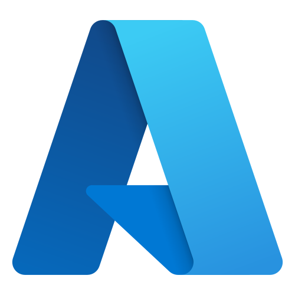
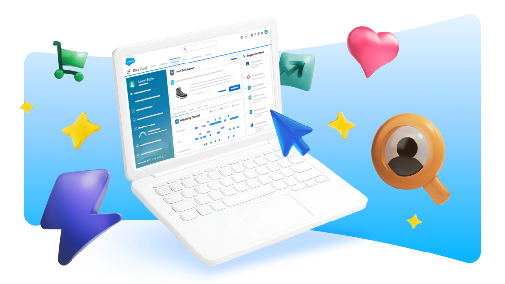
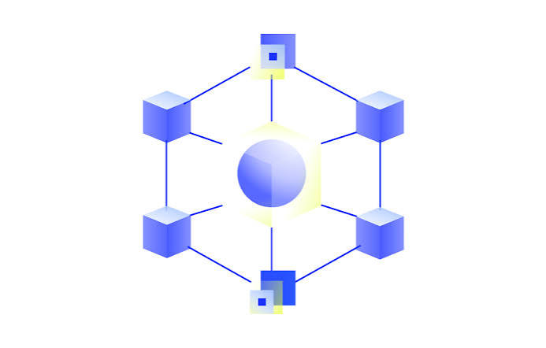

Custom Software
Enterprise-grade applications engineered for scale, security, and long-term maintainability.
From Agentic AI and cloud-native platforms to precision engineering — MKS Vision delivers end-to-end services that accelerate your business performance.
A full suite of software development services — custom web and mobile applications, data analytics platforms, e-commerce solutions, and QA automation — powered by a global talent pool and proven agile delivery frameworks.
Enterprise-grade applications engineered for scale, security, and long-term maintainability.
Native and cross-platform apps built for performance-critical user experiences.
Turn raw data into decisions with real-time dashboards and predictive analytics pipelines.
Automated regression, integration, and end-to-end coverage using Selenium, Cypress, and Jest.
High-converting storefronts on Magento and Shopify, built for speed and checkout conversion.
Research-driven interfaces that reduce friction and lift task completion rates.
EC2, Lambda, S3, RDS, EKS, SageMaker, Bedrock — full-stack AWS architecture and management

App Service, AKS, Azure AI, Cosmos DB, Azure DevOps — enterprise-grade Azure solutions
GKE, BigQuery, Vertex AI, Cloud Run — data-intensive and AI-heavy workloads on GCP
Docker, Kubernetes, Helm — container orchestration for scalable, portable deployments
Terraform, Pulumi, CloudFormation — repeatable, version-controlled infrastructure provisioning
Cost visibility, rightsizing, reserved capacity planning, and cloud spend governance
Deploy scalable, secure, and cost-efficient architectures across top global cloud platforms with version-controlled modern tooling.
Systematic infrastructure assessment, secure database migration, and re-platform pathways for critical legacy services.
Highly modular microservices, auto-scaling serverless APIs, and resilient load-balanced networks.
Automated pipelines powered by GitHub Actions, secure Terraform orchestration, and automated unit checks.
Strict Identity and Access Management (IAM), comprehensive transit encryption, and real-time auditable security logs.
“We don’t just migrate we modernise. Every engagement pairs infrastructure migration with security hardening and cost governance from day one.”
Streamline operations and eliminate operational bottlenecks. We have designed, deployed, and managed over 100 automated enterprise pipelines, converting repetitive back-office routines into rapid autonomous workflows.
Inquiry categorization, auto-replies, CRM syncing, and ticket routing.
Automated billing, reconciliation, expense processing, and invoice generation.
Inventory tracking, order dispatch automation, and partner telemetry syncing.
Employee onboarding workflows, document verification, and payroll syncing.
Ensure longevity and performance. We analyze, restructure, and transform legacy monolithic architectures into scalable, modular, and containerized microservice ecosystems ready for next-gen deployment.
Fostering an Agile culture, decentralized ownership, continuous delivery mindsets, and cross-functional technology alignment.
Decoupling legacy monoliths into cloud-native microservices, modernizing data layers, and automating test coverage.
Transitioning to scalable SAFe delivery frameworks, establishing high-throughput CI/CD, and automating compliance auditing.
Continuous infrastructure monitoring, alert response, and system recovery round the clock.
Strict performance targets, guaranteed response times, and clear, transparent metrics.
Automated system patching, security vulnerability remediation, and continuous software updates.
Highly skilled engineers integrated natively into your workflows, working exclusively for you.
Regular system tuning, performance optimization, and architectural reviews to prevent drift.
Automated offsite backups, recovery simulations, and resilient business continuity setups.
Ensure operational stability and high efficiency. MKS Vision provides end-to-end managed IT services designed to support, scale, and optimize your critical technology landscape.
We handle the daily complexities of infrastructure, applications, and security compliance so your core teams can focus on strategic innovation.
Comprehensive 24/7 server monitoring, cloud host tuning, network patches, and automated backup/recovery.
Regular proactive vulnerability scanning, live threat vector monitoring, firewall tuning, and IAM posture checks.
Dedicated L1/L2/L3 helpdesk support, incident tracking, bug resolutions, and automated software release management.
Real-time metric dashboards, unified log pipelines, monthly SLA performance audits, and resource cost tracking.
Seamless enterprise resource planning integration. Streamline operations, supply chain logistics, and business intelligence pipelines into a single, reliable source of truth.
Custom Salesforce implementations and CRM optimization that turn pipeline data into real-time conversion signal.


API-first integration layers and event-driven microservices that connect disparate systems into one coherent, scalable platform.
Connect physical operations with digital workflows. Our IoT division designs customized sensor integrations, visualizes telemetry streams, and implements predictive alert architectures.
We help industries transition from manual diagnostics to real-time, automated resource oversight, reducing operational risk across physical estates.
Secure sensor-to-cloud telemetry pipelines providing granular status analytics and real-time fault logging.
IoT-enabled automated pH, turbidity, and chemical tracking arrays designed specifically for retail F&B distribution chains.
Leveraging connected device usage analytics to build predictive, data-driven utility service models.
MKS Vision bridges the gap between academic research and commercial applications. By partnering with premium institutions like the Indian Institute of Technology (IIT) and other top-tier global universities, we co-develop frontier technologies.
Co-developing advanced physical engineering hardware, fluid dynamic models, and sensor arrays that require high mathematical rigor.
Partnering on frontier agentic AI research, next-gen transformer scaling architectures, and multi-modal computer vision model fine-tuning.
Active research consortiums spanning universities worldwide to transfer emerging science directly to enterprise operations.
Start a Conversation
Whether you need to scale engineering delivery with spec-driven agentic models, build custom computer vision edge pipelines, or migrate workloads to optimized multi-cloud layouts, we'd love to connect.
100+
Processes Automated via RPA pipelines globally
25-30%
Average Cost Reduction across delivery lifecycles
50+
Years Combined Engineering Excellence
15+
Years Delivering Technology Excellence to Fortune 500